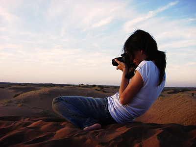
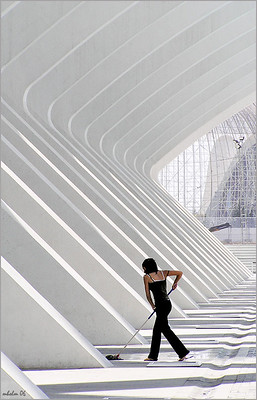
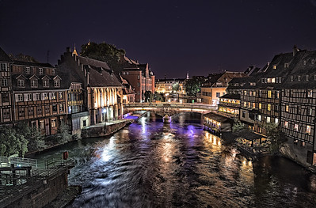

El arte de la fotografía está al alcance de todos, podemos utilizar equipo especial como una cámara reflex digitales, o simplemente haciendo uso de la cámara de nuestro teléfono móvil.
Tomar una buena foto no siempre depende del equipo utilizado, sino de las destrezas del camarógrafo que en gran medida será por el correcto uso de: la elección del encuadre, la iluminación de la escena, el tipo de plano seleccionado, el momento del día y la composición según los objetos que se incluyan.
Si eres aficionado a la fotografía, este sitio web es para tí, queremos conocer sobre tu trabajo y ayudarte a mejorarlo con nuestros aportes fotográficos y consejos para mejorar tus aptitudes de fotógrafo.
| Fotografía | Autor | Descripción | Enlace |
|---|---|---|---|
|  | aguscruz | la fantastica fotograa contratista | Fuente Original |
|  | manuel holgado | paisajes verticales | Fuente Original |
|  | Miquel Fabre | STRASBOURG AT NIGHT - ESTRASBURGO DE NOCHE | Fuente Original |